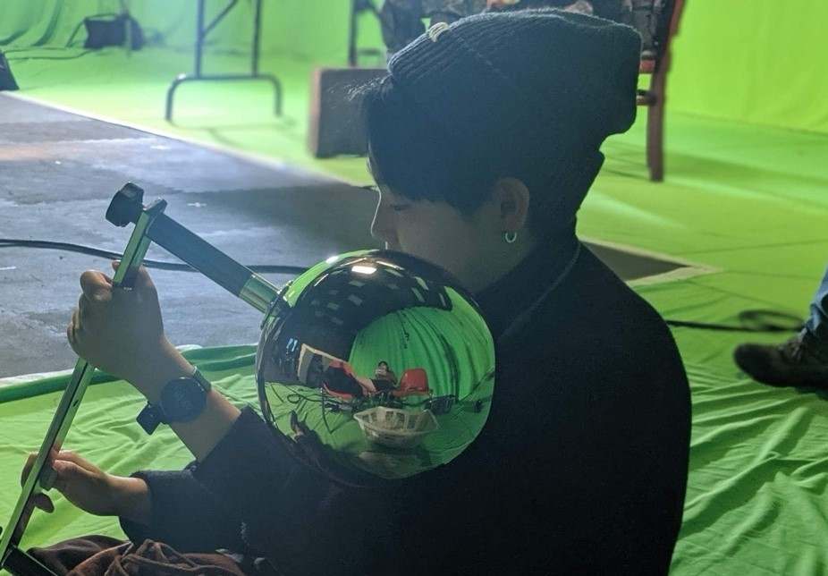
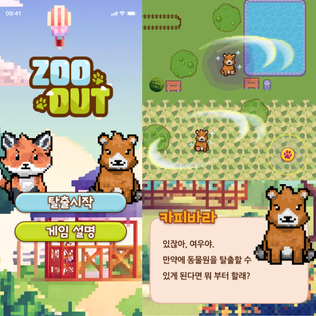
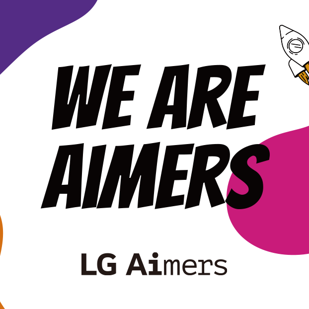
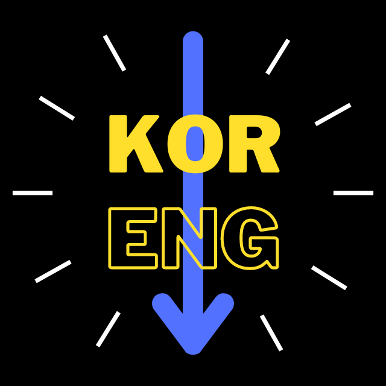

|
Jinhyung Ahn I am currently an undergraduate student at Yonsei University, pursuing a double major in Computer Science and Philosophy. My academic focus is on Computer Vision (CV), with a particular interest in 3D Vision. I am an active member of the Yonsei Artificial Intelligence (YAI) academic society, where I engage in studies and collaborative projects in the CV domain. In addition, I contribute to game development within the Yonsei Computer Club (YCC), supported by the WORKSTATION program under the Institute for Higher Education Innovation(IHEI) at Yonsei University. |
 |
{kind=link}
Education
Academic Interests and Objective
Moving forward, my academic goal is to conduct research on 3D vision models that can be effectively integrated into the VFX pipeline for live-action footage, particularly in the areas of 3D simulation, deformation and rendering. I aim to explore how AI-driven 3D Graphics can enhance these processes and contribute to more efficient and realistic Visual Effects. |
ExperiencesYonsei Artificial Intelligence (YAI)— [July 2024 - Present] Member, Team Leader
Yonsei Computer Club (YCC)— [March 2024 - Present]
|
Projects |
|

|
Zoo Out! Unity Game Development Project Gameplay Developer Yonsei University IHEI, 2024 Fall (Scholarship) Designed and implemented core game systems, including enemy behavior algorithms, weapons functionality, and player mechanics, ensuring seamless gameplay and interaction. |
 |
The Dog's Perspective Multi-class Image Classification Project Developer Developed a 5-class image classification model utilizing EfficientNetV2 architecture to predict dog's perception of human emotions. Contributed to the implementation of the model, as well as the design and execution of data preprocessing pipelines and experimental modules. |
|

|
LG Aimers 5th Hackerthon Anomaly Prediction Project Team Leader, Developer Led the development of a classification model to predict product anomalies using corporate manufacturing data, with comprehensive oversight of data preprocessing, model design, and hyperparameter tuning. Achieved a top 30% rank in the competition. |
|

|
Transformer-based KOR-ENG Machine Translation Project
Personal Project Developed a Transformer model for the Korean-to-English machine translation task, based on the seminal paper "Attention Is All You Need." Built the model from scratch, achieving accurate translation performance. |
|
Website source code by Jon Barron. |